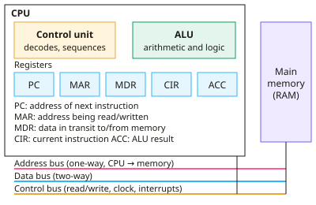

A-level Computer Science Year 13 · Topic 11
Processors, input, output and storage devices
Processors, input, output and storage looks in depth at how a computer's hardware works and performs.
We will study the A L U, control unit, registers and buses, the fetch decode execute cycle, and pipelining.
Then we compare architectures, C I S C and R I S C, G P Us and parallel systems, storage technologies, and specialist input and output devices.
- 7 subtopics
- 259 questions
- Free: 11.1 notes and 10 questions
In this topic
- 11.1Structure of the processor: ALU, control unit, registers and busesFree below · 28 questions
- 11.2Fetch-decode-execute cycle and factors affecting processor performanceOpen in Full Marks · 32 questions
- 11.3Pipelining and its hazardsOpen in Full Marks · 25 questions
- 11.4Von Neumann, Harvard and contemporary processor architecturesOpen in Full Marks · 27 questions
- 11.5CISC and RISC, GPUs, multicore and parallel systemsOpen in Full Marks · 26 questions
- 11.6Primary and secondary storage: RAM, ROM, magnetic, flash, optical and virtual storageOpen in Full Marks · 73 questions
- 11.7Input and output devices and their specialist applicationsOpen in Full Marks · 48 questions
11.1 · Free notes
Structure of the processor: ALU, control unit, registers and buses

Key points
- The CPU fetches, decodes and executes stored instructions. It contains the ALU, the control unit, registers, a clock and internal buses, and connects to main memory by the system buses.
- The ALU (arithmetic logic unit) does arithmetic (add, subtract), logic (AND, OR, NOT, XOR), shifts and comparisons. Results normally go to the accumulator (ACC).
- The control unit (CU) decodes each instruction and sends control signals to the ALU, registers, memory and I/O to coordinate the cycle. It is driven by the clock, which sets the timing of the processor.
- Registers are very small, very fast storage locations inside the CPU. They are built into the processor, so no bus transfer is needed to reach them. They are either general purpose or special purpose.
- Program counter (PC): holds the address of the next instruction to fetch. It is incremented after each fetch, and a branch or jump overwrites it.
- Memory address register (MAR): holds the address of the memory location to be read from or written to. Memory data register (MDR/MBR): holds the data or instruction just read from memory, or about to be written to it.
- Current instruction register (CIR): holds the instruction being decoded and executed. Accumulator (ACC): holds ALU results. The status register holds flags such as zero, carry, negative and overflow.
- The address bus is unidirectional (CPU to memory) and carries addresses. The data bus is bidirectional and carries data and instructions. The control bus carries signals such as memory read/write, clock and interrupt requests.
- The width of the address bus sets how many locations can be addressed: n lines give 2^n locations (a 32-bit bus addresses 2^32 bytes = 4 GiB if byte-addressable). The width of the data bus sets how many bits move per transfer.
- Von Neumann architecture uses one shared memory and one set of buses for instructions and data, which causes the Von Neumann bottleneck. Harvard architecture has separate memories and buses, so an instruction and data can be accessed at the same time. It is common in embedded systems and DSPs.
- Contemporary (modified Harvard) processors use Von Neumann main memory but separate L1 instruction and data caches. This combines the flexibility of one memory with the speed of parallel access.
In more detail
- ALU jobs: addition, subtraction, comparisons that set flags, logical AND, OR and NOT, and shifts.
- Worked flags: after CMP R1, R2 with equal values, the zero flag is set, so a BEQ (branch if equal) instruction jumps.
- Worked control unit: it decodes each opcode and sends control signals, such as memory read and write, timed by the clock.
- Worked registers: general-purpose registers hold working values so the CPU avoids slow trips to memory.
- Worked bus widths: a 16-bit address bus reaches 65 536 locations; a 32-bit data bus moves 4 bytes at a time.
Practice
Structure of the processor: ALU, control unit, registers and buses: 10 questions
Pick an answer to check it, or open the answer for the explanation.
1. Which register holds the address of the next instruction to be fetched from memory?
- MAR
- CIR
- PC
- ACC
Show answer
C: PC. The program counter holds the address of the next instruction and is incremented after each fetch. The MAR holds the address currently being accessed, not the next instruction.
2. In a Von Neumann CPU, which bus carries memory addresses one way only, from the processor to memory?
- Instruction bus
- Data bus
- Address bus
- Control bus
Show answer
C: Address bus. The address bus is unidirectional: the CPU places an address on it and memory reads it. The data bus is bidirectional and the control bus carries signals.
3. A processor has a 20-bit address bus and byte-addressable memory. How many locations can it address?
- 20 locations
- 2 000 000 locations
- 40 000 locations
- 1 048 576 locations
Show answer
D: 1 048 576 locations. n address lines give 2^n locations. 2^20 = 1 048 576, which is 1 MiB if each location holds one byte.
4. Which component carries out the operations AND, OR and addition on binary values?
- MAR
- ALU
- Control unit
- Program counter
Show answer
B: ALU. The arithmetic logic unit performs arithmetic and logical operations. The control unit only decodes instructions and issues control signals.
5. Which statement about the Harvard architecture is correct?
- It has no registers
- It uses separate memories and buses for instructions and data
- It can only run one program ever
- Instructions and data share one memory
Show answer
B: It uses separate memories and buses for instructions and data. Harvard architecture separates instruction and data memory (and buses), so both can be accessed simultaneously. Von Neumann uses one shared memory.
6. During the decode stage, which component interprets the opcode and generates the control signals?
- Control unit
- ALU
- Data bus
- MDR
Show answer
A: Control unit. The control unit decodes the instruction in the CIR into opcode and operand and then sends control signals to other components.
7. A CPU has a 32-bit address bus with byte-addressable memory. What is the maximum memory it can address directly?
- 32 MiB
- 1 GiB
- 4 GiB
- 32 GiB
Show answer
C: 4 GiB. 2^32 bytes = 4 294 967 296 bytes = 4 GiB. Address bus width fixes the number of addressable locations, not the speed.
8. Which register temporarily holds data that has just been read from main memory?
- MDR
- PC
- MAR
- Status register
Show answer
A: MDR. The memory data register (MBR) holds the data or instruction transferred over the data bus from memory, or data about to be written to memory.
9. An ALU operation produces the result 0. Which status register flag is set?
- Interrupt flag
- Zero flag
- Negative flag
- Carry flag
Show answer
B: Zero flag. The zero flag is set when the result of an operation is zero. Branch instructions such as BEQ can then test it.
10. Why is accessing a register faster than accessing main memory?
- Registers are cheaper per byte
- Registers use the address bus only
- Registers are inside the CPU, so no bus transfer is needed
- Registers are bigger than RAM
Show answer
C: Registers are inside the CPU, so no bus transfer is needed. Registers sit inside the processor and are accessed directly, without bus transfers to RAM. They are fast but very small and expensive per byte.
Keep going in Full Marks
Full Marks has 28 questions on Structure of the processor: ALU, control unit, registers and buses (18 more than here), set out in practice levels. You also get notes and 3D models for all 7 subtopics of Processors, input, output and storage devices, plus games, timed exams and past papers.